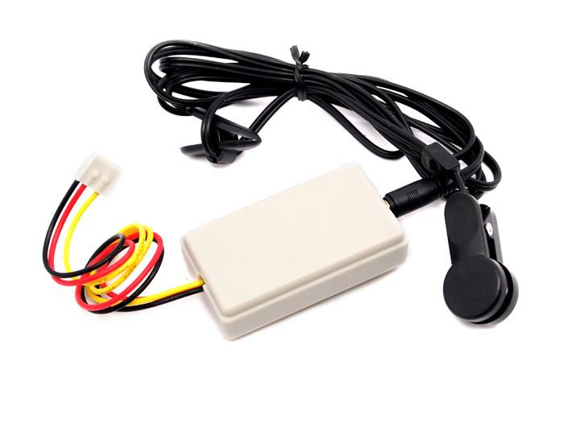
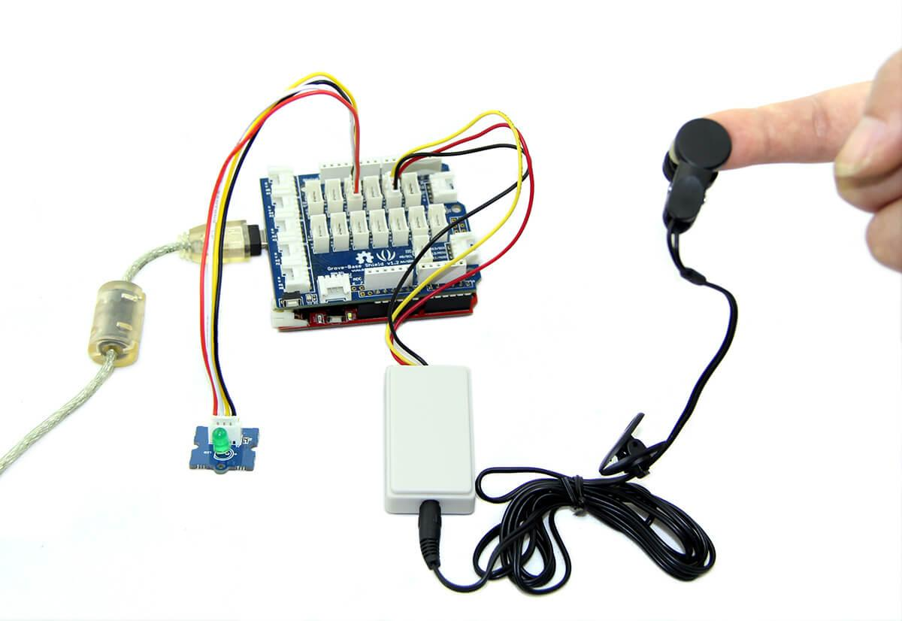
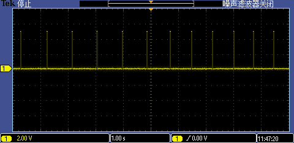

The Heart Rate Ear clip kit contains a ear clip and a receiver module. The heart rate measure kit can be used to monitor heart rate of patient and athlete. The result can be displayed on a screen via the serial port and can be saved for analysis. The entire system is a high sensitivity, low power consumption and portable.
Model: MED03212P

| Item | Min | Typical | Max | Unit |
|---|---|---|---|---|
| Voltage | 3.0 | 5.0 | 5.25 | V |
| Work Current | 6.5 | mA | ||
| Length of ear clip wire | 120 | cm | ||
| Measures Range | ≥30/min | - | ||
The following sketch demonstrates a simple application of using the Ear-clip Heart Rate Sensor to measure heart rate.

// Function: This program can be used to measure heart rate, the lowest pulse in the program be set to 30.
// Use an external interrupt to measure it.
// Hardware: Grove - Ear-clip Heart Rate Sensor, Grove - Base Shield, Grove - LED
// Arduino IDE: Arduino-1.0
// Author: FrankieChu
// Date: Jan 22, 2013
// Version: v1.0
// by www.seeedstudio.com
#define LED 4//indicator, Grove - LED is connected with D4 of Arduino
boolean led_state = LOW;//state of LED, each time an external interrupt
//will change the state of LED
unsigned char counter;
unsigned long temp[21];
unsigned long sub;
bool data_effect=true;
unsigned int heart_rate;//the measurement result of heart rate
const int max_heartpluse_duty = 2000;//you can change it follow your system's request.
//2000 meams 2 seconds. System return error
//if the duty overtrip 2 second.
void setup()
{
pinMode(LED, OUTPUT);
Serial.begin(9600);
Serial.println("Please ready your chest belt.");
delay(5000);
arrayInit();
Serial.println("Heart rate test begin.");
attachInterrupt(0, interrupt, RISING);//set interrupt 0,digital port 2
}
void loop()
{
digitalWrite(LED, led_state);//Update the state of the indicator
}
/*Function: calculate the heart rate*/
void sum()
{
if(data_effect)
{
heart_rate=1200000/(temp[20]-temp[0]);//60*20*1000/20_total_time
Serial.print("Heart_rate_is:\t");
Serial.println(heart_rate);
}
data_effect=1;//sign bit
}
/*Function: Interrupt service routine.Get the sigal from the external interrupt*/
void interrupt()
{
temp[counter]=millis();
Serial.println(counter,DEC);
Serial.println(temp[counter]);
switch(counter)
{
case 0:
sub=temp[counter]-temp[20];
Serial.println(sub);
break;
default:
sub=temp[counter]-temp[counter-1];
Serial.println(sub);
break;
}
if(sub>max_heartpluse_duty)//set 2 seconds as max heart pluse duty
{
data_effect=0;//sign bit
counter=0;
Serial.println("Heart rate measure error,test will restart!" );
arrayInit();
}
if (counter==20&&data_effect)
{
counter=0;
sum();
}
else if(counter!=20&&data_effect)
counter++;
else
{
counter=0;
data_effect=1;
}
}
/*Function: Initialization for the array(temp)*/
void arrayInit()
{
for(unsigned char i=0;i < 20;i ++)
{
temp[i]=0;
}
temp[20]=millis();
}
 
In the left of the figures which is a waveform diagram of the detected heartbeat, A high pulse comes when beating.
Note: If the serial monitor return an error message, please change the position of the sensor.
Grove - Ear-clip Heart Rate Sensor Demo code
If you have questions or other better design ideas, you can go to our forum or wish to discuss.
Copyright (c) 2008-2016 Seeed Development Limited (www.seeedstudio.com / www.seeed.cc)